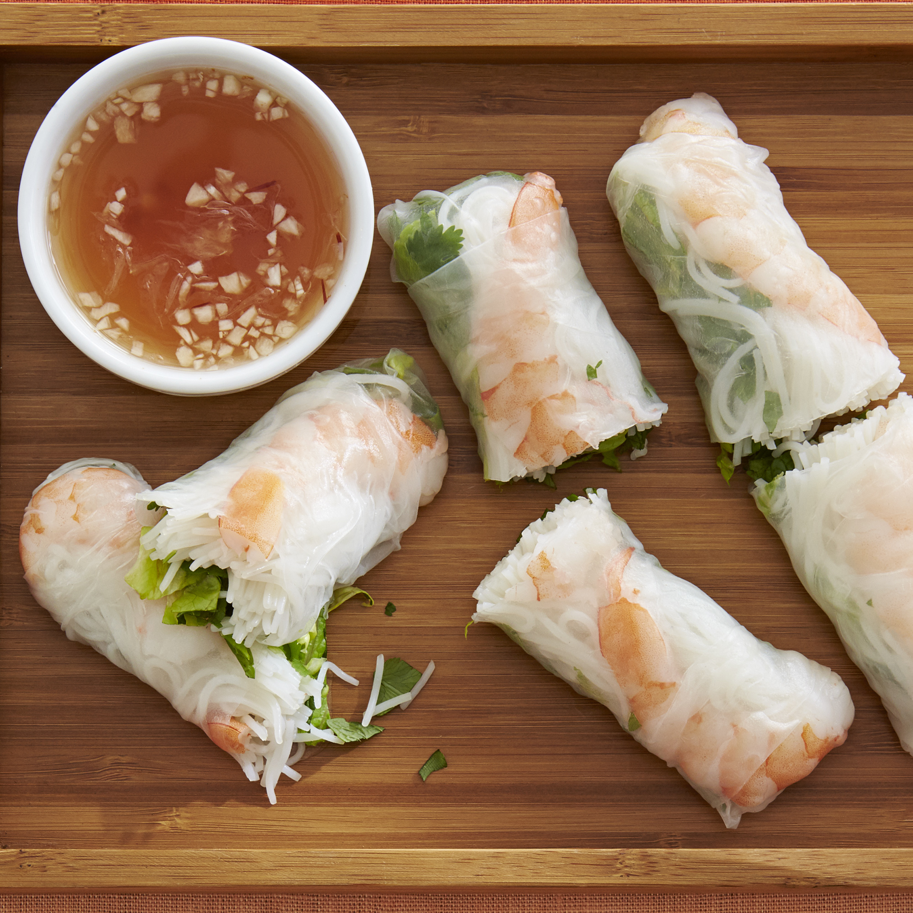

Vietnamese Spring Rolls

These spring rolls are a refreshing change from the usual fried variety, and have become a family favorite.
They are great as a cool summertime appetizer, and are delicious dipped in one or both of the sauces.
Ingredients
- 2 ounces rice vermicelli
- 8 rice wrappers
- 8 large cooked shrimp
- 1 1/3 tbsp chopped fresh Thai basil
- 3 tbsp chopped fresh mint leaves
- 3 tbsp chopped fresh cilantro
- 2 leaves lettuce, chopped
- 4 teaspoons fish sauce
- 1/4 cup water
- 2 tbsp fresh lime juice
- 1 clove garlic, minced
- 2 tbsp white sugar
- 1/2 tsp garlic chili sauce
- 3 tbsp hoisin sauce
- 1 tsp finely chopped peanuts
Steps
- Bring a medium saucepan of water to boil. Boil rice vermicelli 3 to 5 minutes, or until al dente, and drain.
- Fill a large bowl with warm water. Dip one wrapper into the hot water for 1 second to soften. Lay wrapper flat.
In a row across the center, place 2 shrimp halves, a handful of vermicelli, basil, mint, cilantro and lettuce,
leaving about 2 inches uncovered on each side. Fold uncovered sides inward, then tightly roll the wrapper,
beginning at the end with the lettuce. Repeat with remaining ingredients.
- In a small bowl, mix the fish sauce, water, lime juice, garlic, sugar, and chili sauce.
- In another bowl, mix the hoisin sauce and peanuts.
- Serve rolled spring rolls with the fish sauce and hoisin sauce mixtures.